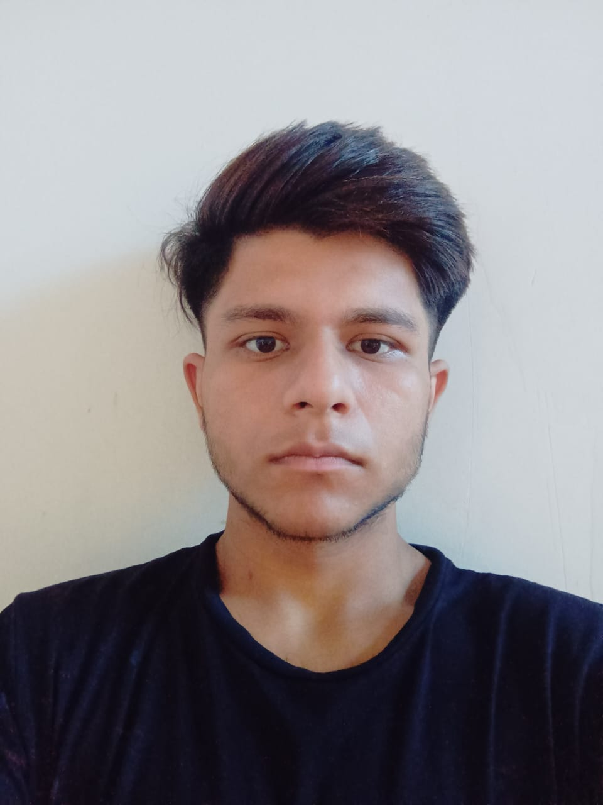
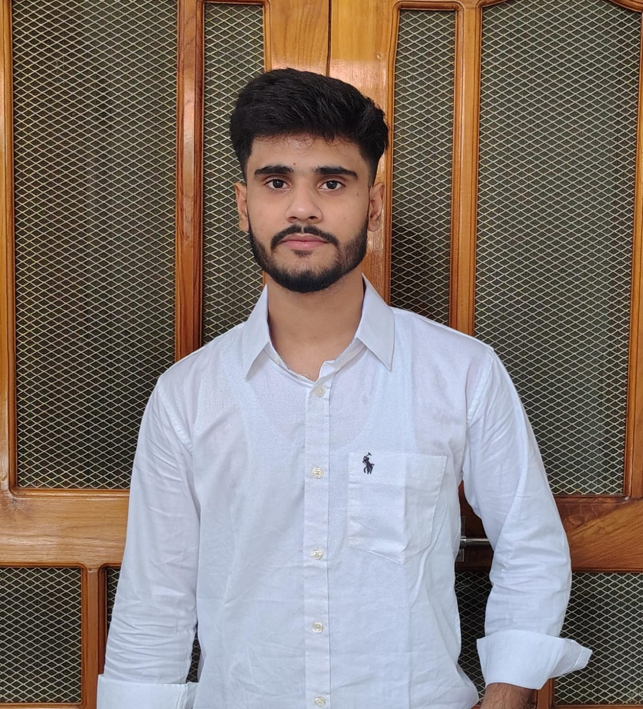

Arib
ML Engineer & Frontend Lead
Designed the TF-IDF + Logistic Regression sentiment model, led ML development for Twitter analytics across Sentiment, Timeline, Trends, and Propagation pillars, and oversaw frontend architecture.
Six people, one graph. The same idea that powers the propagation charts — nodes, edges, and how things connect — is how this team works too.
Each node is a teammate; the dashed links mark people who work side by side.
Designed the TF-IDF + Logistic Regression sentiment model, led ML development for Twitter analytics across Sentiment, Timeline, Trends, and Propagation pillars, and oversaw frontend architecture.

Spearheaded ML development for Instagram analytics across all four pillars — Sentiment, Timeline, Trends, and Propagation — and coordinated end-to-end delivery of the project.
Built and maintained the Flask API layer, integrating Instagram data pipelines with ML models to deliver a prototype-ready analytics backend.
Contributed to UI/UX design decisions and frontend implementation, shaping the visual identity and interactive components of the SMI dashboard.
Maintained comprehensive project documentation — recording meeting decisions, technical rationale, and progress tracking to ensure knowledge continuity across the team.

Maintained comprehensive project documentation — recording meeting decisions, technical rationale, and progress tracking to ensure knowledge continuity across the team.